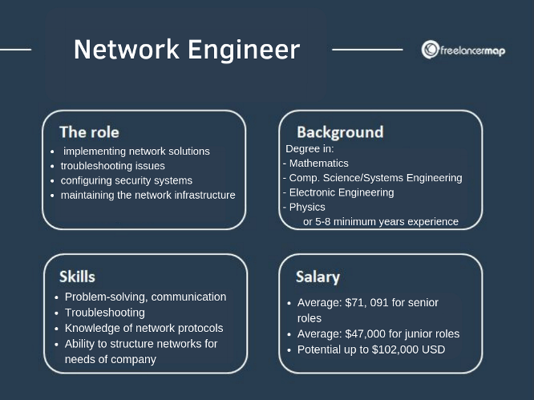

REVIEW EXERCISE
This is HTML Day-3, Lesson-3!
Network Devies
- Repeater
- Hub
- Bridge
- Switch
- Routers
- Gateway
- Brouter
- NIC
Transmission Modes in Computer Networks
- Simplex
- Half-Duplex
- Full-Duplex
Network Security
-
System Security
- Security of a computer system is a crucial task. It is a process of ensuring confidentiality and integrity of the OS.
A system is said to be secure if its resources are used and accessed as intended under all the circumstances, but no system can guarantee absolute security from several of the various malicious threats and unauthorized access.

Click
Here
For More!
Check Out
My Website!